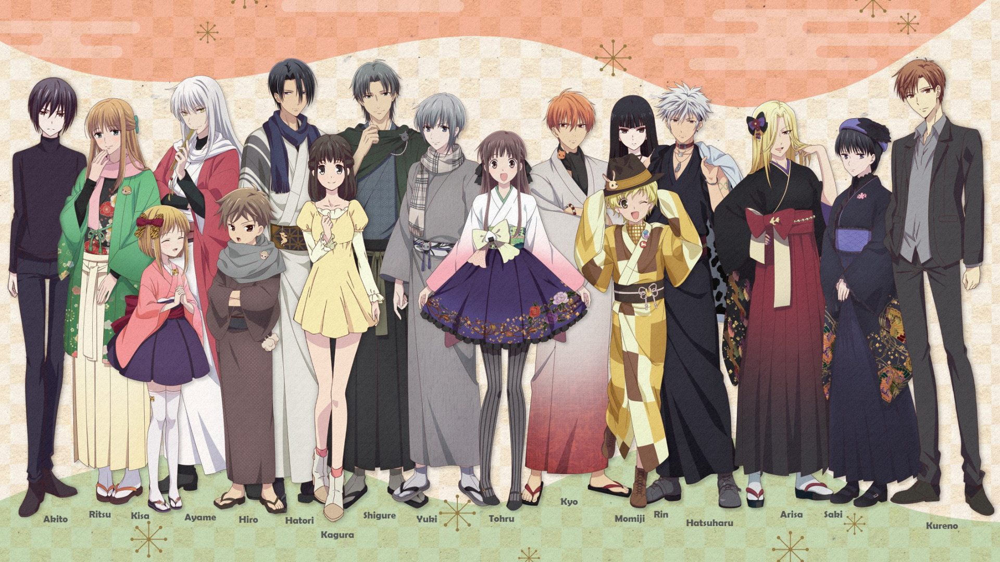

About Fruits Basket
After Tohru is taken in by the Soma family, she learns that twelve family members transform involuntarily into animals of the Chinese zodiac and helps them deal with the emotional pain caused by the transformations.
Tohru and the other characters
Chinese zodiac and the Sohma family
In this anime, most of the main characters (which are part of the Soma family) are atributed a Chinese Zodiac animal. They transform into these animals as they hug a person of the opposite gender who is not a part of the zodiac.
- Yuki Sohma - The Rat
- Hatsuharu Sohma - The Ox (cow)
- Kisa Sohma - The Tiger
- Momiji Sohma - The Rabbit
- Hatori Sohma - The Dragon
- Ayame Sohma - The Snake
- Isuzu Sohma - The Horse
- Hiro Sohma - The Sheep (goat)
- Ritsu Sohma - The Monkey
- Kureno Sohma - The Rooster
- Shigure Sohma - The Dog
- Kagura Sohma - The Pig (boar)
- Kyo Sohma - The Cat (he is the unofficial Spirit in the Zodiac)
Main characters
Here you can see some of the main characters. Click the links below to find out more about them!